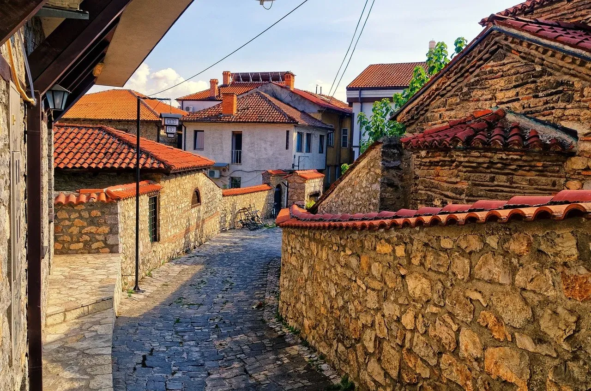
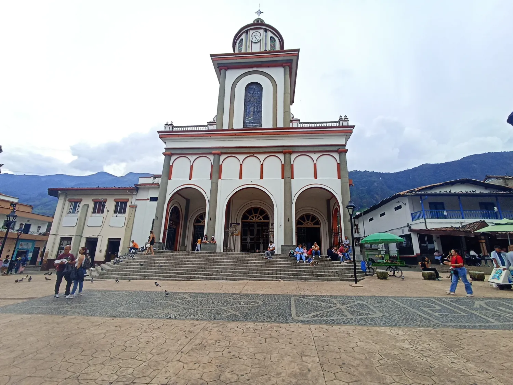
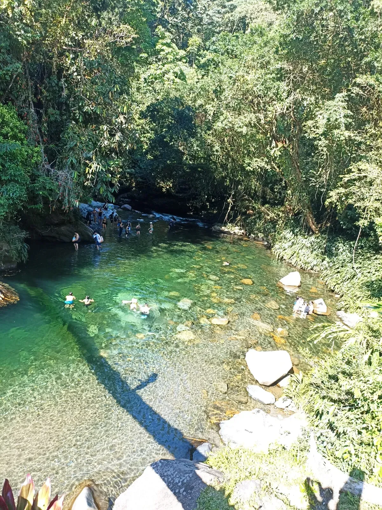
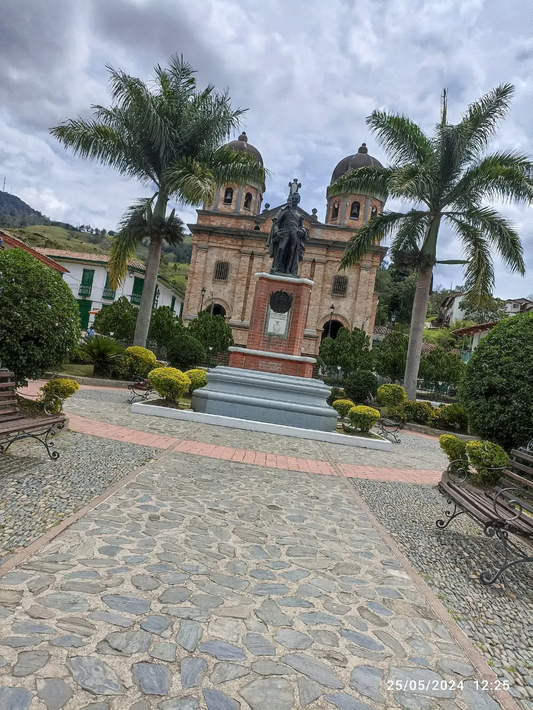

Editorial
Una revista para leer despacio el territorio.
"Los viajes cercanos merecen ser contados con calma. Más que una guía de lugares, este es un espacio para reunir las historias, los paisajes y la memoria que dan vida al camino".
Crónicas, fotografías y paisajes de Antioquia
"Una invitación a leer los pueblos, sus caminos y sus memorias".

Editorial
"Los viajes cercanos merecen ser contados con calma. Más que una guía de lugares, este es un espacio para reunir las historias, los paisajes y la memoria que dan vida al camino".
"La vida, o es una aventura, o no es nada."
Helen Keller
Reportajes

Petroglifos, plaza principal y una caminata que convierte la niebla en parte del relato. Una crónica donde el paisaje y la memoria se cruzan en cada tramo.
Leer reportaje
Un viaje donde el agua ordena el ritmo y el entorno obliga a mirar con más calma.
Abrir crónica
Un pueblo de piedra y sosiego, ideal para leer el pasado en fachadas, calles y silencios.
Ver historiaCuaderno de viaje
No buscamos llegar a un destino, buscamos perdernos en la experiencia